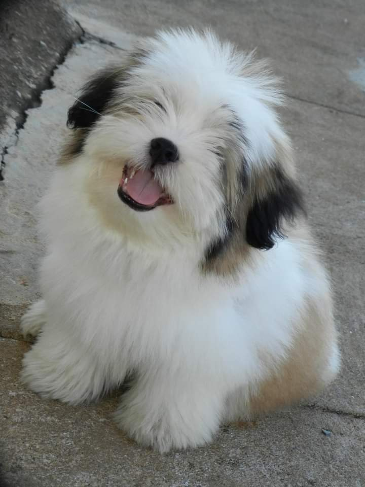
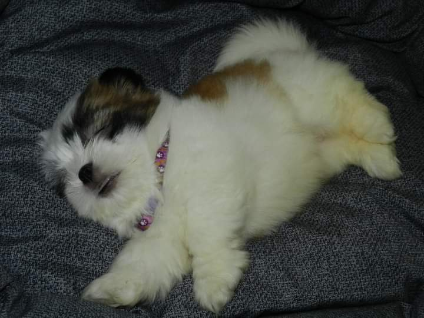
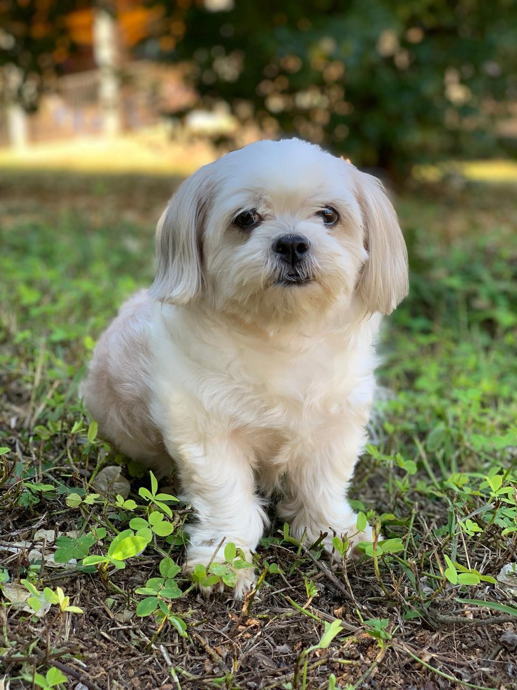
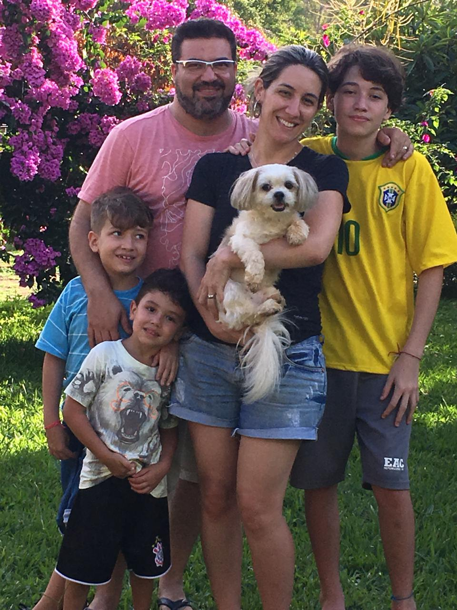

Matheus Eduardo
Desenvolvedor web
Sou aluno do Senac, fazendo o primeira ano do ensino médio e cursando multimídia. Programador de web com 2 anos de experiência. Ligado na parte de web design, tenho experiência com Photoshop, Fireworks, Illustrator e aprendendo Figma.
View PortifolioRelato de memória
Sempre nas férias do fim de ano, eu vou viajar com meus avós pra algum lugar, normalmente é para a praia. Como eles são de Minas, tínhamos que sair de lá, fazer uma parada em São Paulo, e depois de tudo continuar seguindo
Quando eu tinha uns 9 anos, fomos para Ubatuba. Foi incrível como sempre, passar o final das férias com meus avós na praia sempre é muito bom. Quando estávamos voltando pra casa, minha avó me chama e fala o seguinte:
- Matheus, não vamos para casa agora, temos que passar em um lugar antes, é uma surpresa.
Eu fiquei inquieto o caminho todo, como já era de se esperar. Quando eu vi que passamos a entrada da cidade ainda, fiquei ainda mais animado!!
Se passaram mais uns 20 minutos e chegamos em Lavras, a surpresa estava cada vez mais perto. Chegamos finalmente em uma casa, não reconheci na hora, então minha vó veio e disse:
- Viemos pegar sua nova cachorrinha!
Eu, sem entender muito, estava achando o máximo aquilo, eu teria um bichinho de estimação pra cuidar!!
Quando meu vô veio com ela na mão, aquela pequena bolinha de pelo clara, colocou no meu colo e disse:
- Tome cuidado tá, ela ainda é muito bebê, precisa ser cuidada direitinho.
Assenti com um sorriso e comecei a pensar em um nome para a pequena bolinha de algodão. Sem ideias, comecei a perguntar para as pessoas, até que veio o nome Meg. Logo de cara gostei muito do nome, curtinho, simples, delicado, como ela, perfeito.

Posso dizer que, ter a Meg, foi a porta para eu amar tanto os animais, todos os tipos deles. Cuidar dela me fez criar um afeto pelos animais que nem eu sabia que tinha. Quem esperava essa, uma surpresa de final de férias me faria mudar tanto assim. Mas, sem dúvida, sou grato por isso, não sei como é o Matheus sem gostar de animais assim.
